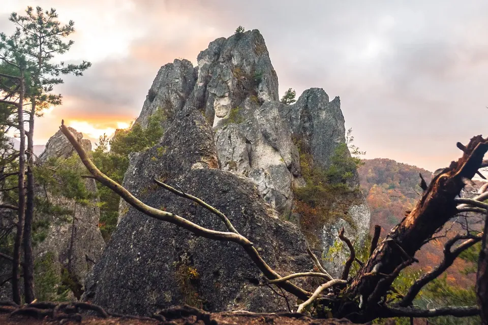
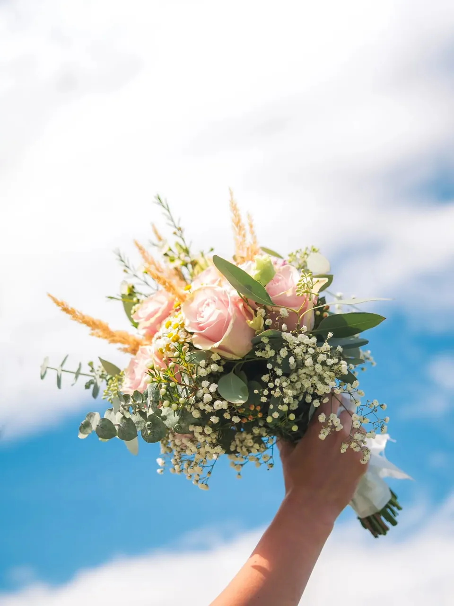
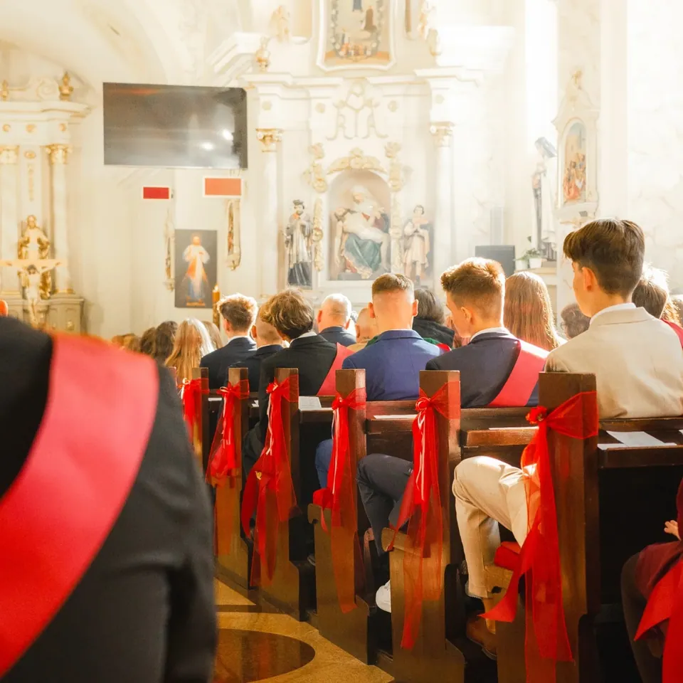
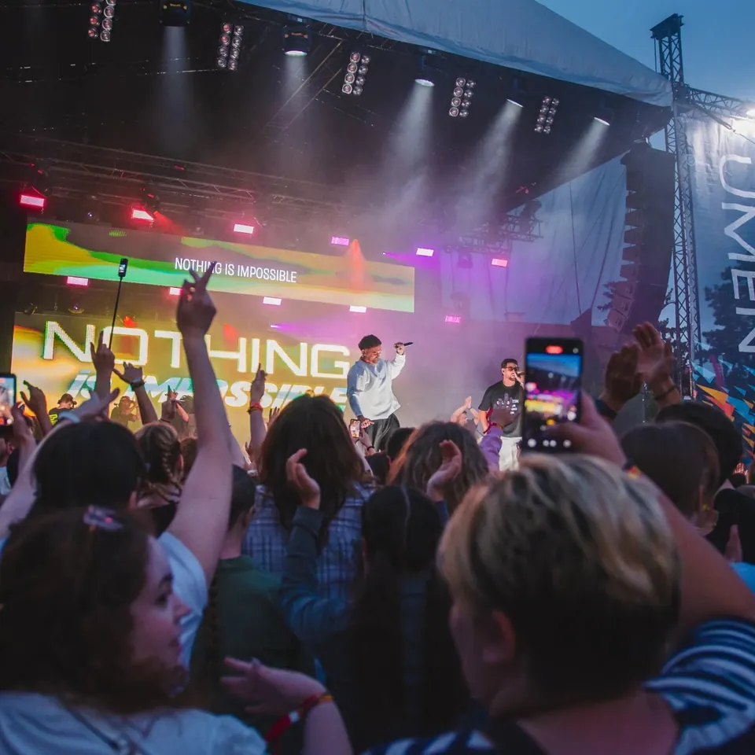

Jaromír Marek
Fotograf z Trnavy. Fotím eventy, portréty a prírodu.

Portfólio









TODO: ďalšie fotky z Instagramu (@jarofotos) a originály od Jara
O mne
Fotím eventy, portréty a prírodu. Som z Trnavy a s foťákom ma nájdete na svadbách, stužkových, festivaloch aj na výletoch po Slovensku.
TODO: vlastný text o sebe od Jara
- Eventy
- Svadby, stužkové, birmovky, koncerty a festivaly.
- Portréty
- Portrétne focenie, najradšej vonku v dennom svetle.
- Príroda a mesto
- Slovenská krajina, skaly a výhľady, Trnava.
TODO: cenník alebo „cena dohodou“
TODO: portrét Jara
Dohodnime si focenie
Napíšte mi na Instagram (@jarofotos): o aký typ focenia ide, kedy a kde.
Napísať na Instagram Profil @jarofotos
TODO: e-mail TODO: telefón